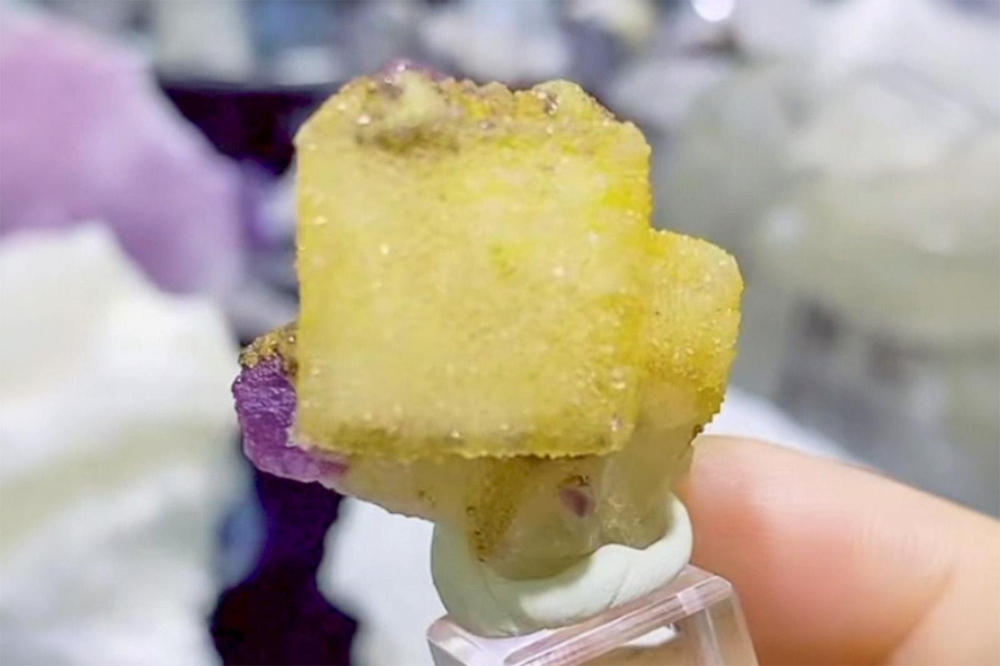

Fluorite with Quartz Coating
"Yellow and Purple Sugar Fluorite TN"
III-09784
Inner Mongolia, China
Purchased 3/16/2026 from 7 Minerals Mine for $5.00
Core Collection • In Collection
Details
Storage Type: Flat
Storage Location: 000 Unassigned
Size class: Thumbnail (0)
Dimensions: 2.7 × 1.9 × 2.7 cm
Mass: 17.2 g
Luster: Average, Sub-Vitreous